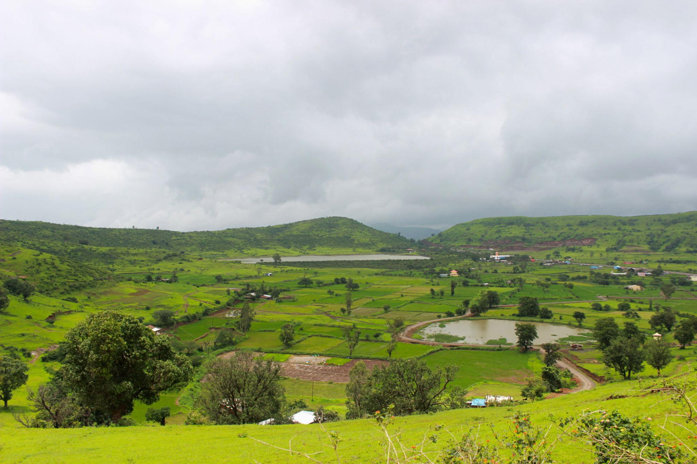
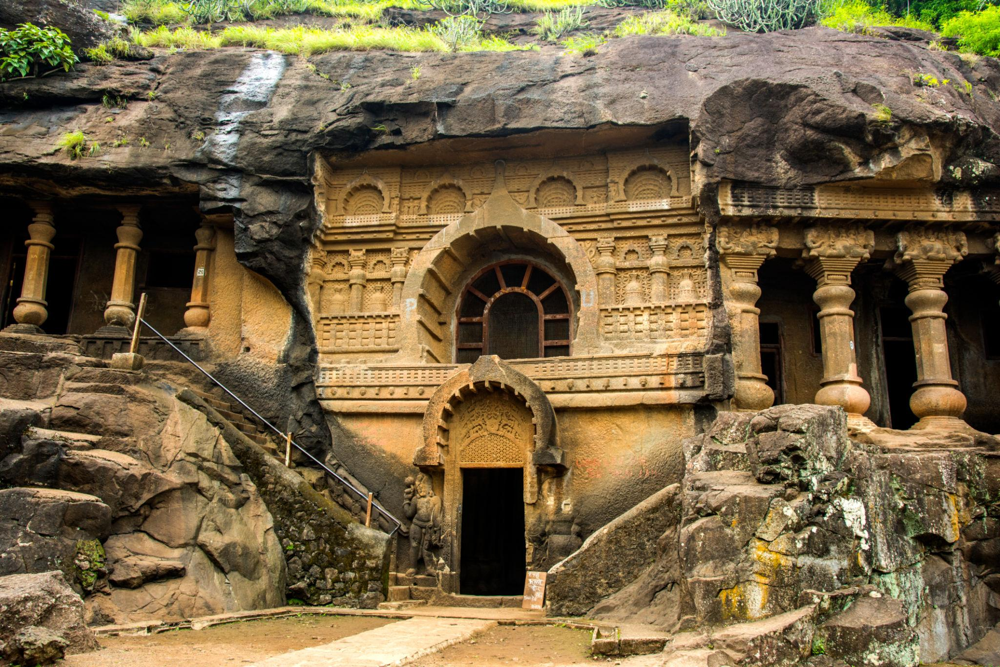
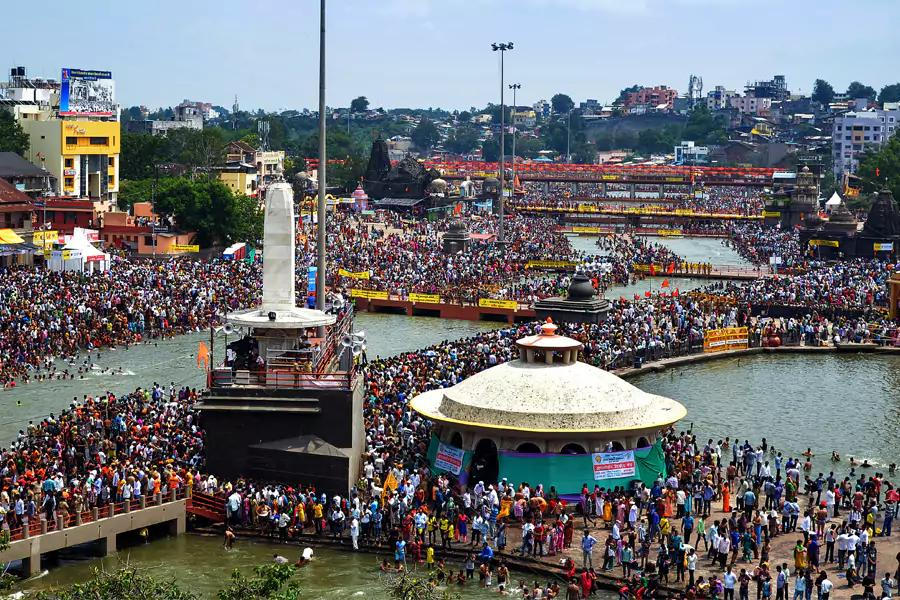
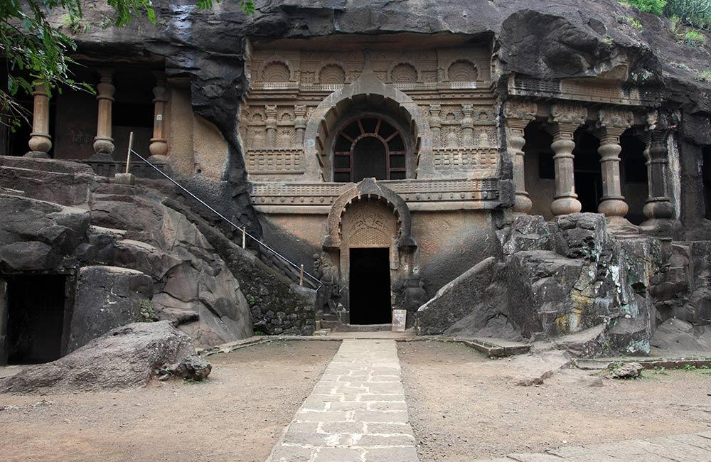
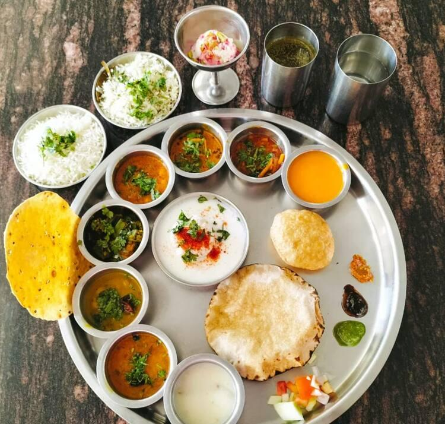
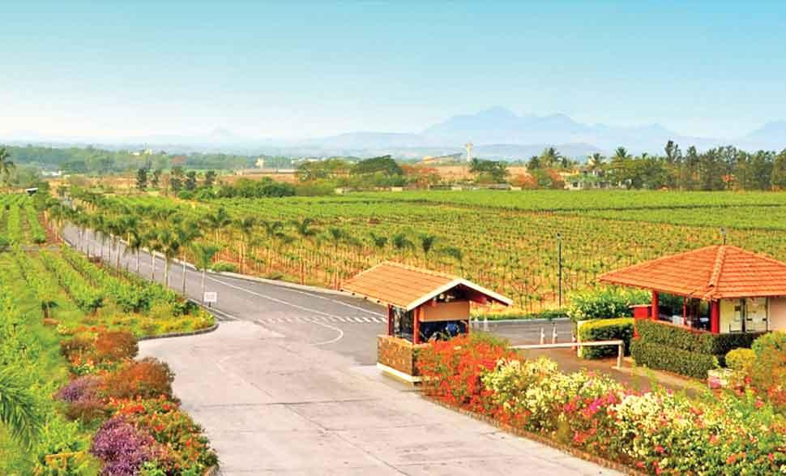
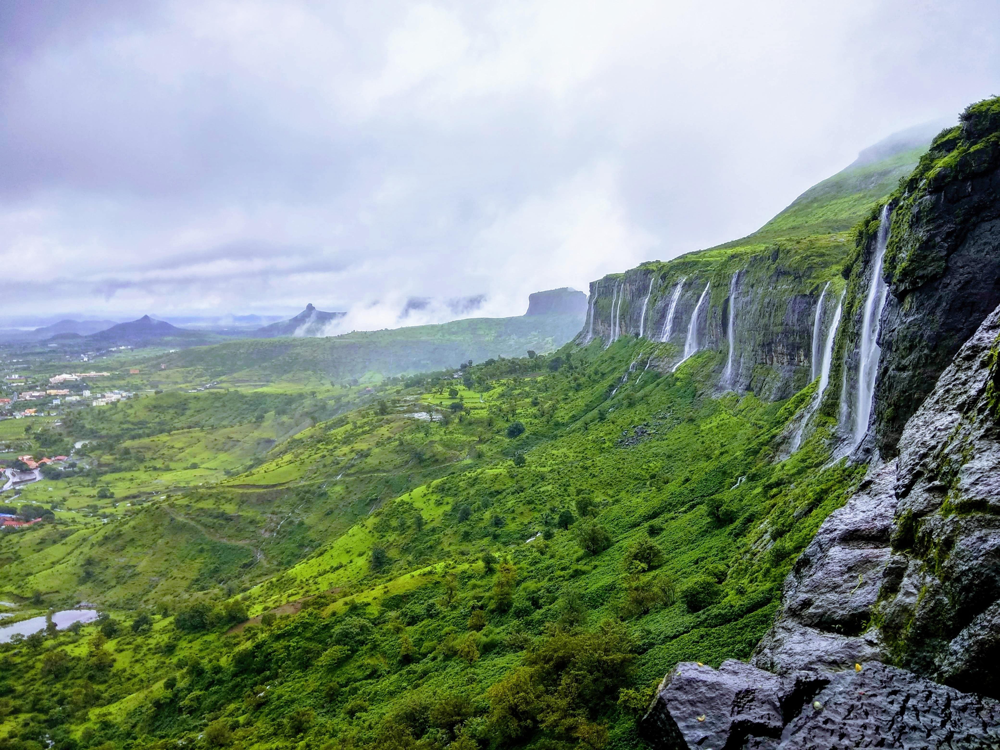

About

Nashik, located on the banks of the sacred Godavari River in Maharashtra, is a dynamic city that blends ancient mythology with modern industry. Famous as the "Wine Capital of India" and a major host of the Kumbh Mela, it offers a rich mix of spirituality, economic vitality, and scenic landscapes.AboutSituated in northwestern Maharashtra, Nashik is approximately 200 kilometers from both Mumbai and Pune, forming the state's economic "Golden Triangle". The city enjoys a pleasant, cool climate and is surrounded by the picturesque Sahyadri mountain ranges.
- Location: Northwestern Maharashtra, India (positioned along National Highway 60, about 210 km northeast of Mumbai and 210 km north of Pune).
- Famous as: The "Wine Capital of India," the "Grape Capital," and a holy pilgrimage city that hosts the grand Simhastha Kumbh Mela.
- Major sectors: Viticulture and agriculture (specifically grapes, onions, and tomatoes), heavy manufacturing (aircraft, currency printing, and engineering), and robust religious tourism.
- Climate: Semi-arid climate (featuring hot summers from March to May, a refreshing monsoon season from June to September, and pleasantly cool, dry winters).
History

Nashik boasts deep roots in ancient Hindu mythology and the epic Ramayana. Lord Rama, along with Sita and Lakshmana, is believed to have made Nashik his abode during his 14-year exile. The city's name originates from the legend where Lakshmana severed the nose (Nasika) of the demoness Shurpanakha in the Panchavati area. Beyond mythology, Nashik grew into a vital political and trading hub under dynasties like the Satavahanas, Yadavas, and Marathas. During the British Raj, it became a focal point for India’s freedom struggle, famously hosting the historic 1930 Kalaram Temple entry satyagraha led by Dr. B.R. Ambedkar to fight caste discrimination.
- Ancient Roots: Originally thrived under the Mauryan Empire and the ancient Satavahana dynasty as a major religious and trade hub, later ruled by the Western Kshatrapas, Chalukyas, and the 12th-century Yadavas of Devagiri.
- Key Rulers: Gautamiputra Satakarni (the famous Satavahana king), the Peshwas of the Maratha Empire (who oversaw massive temple construction), and modern social reformer Dr. B.R. Ambedkar (who led a landmark civil rights movement here).
- Historic Sites: Pandavleni Caves (24 ancient rock-cut Buddhist caves), Kalaram Temple, Trimbakeshwar Shiva Temple, and majestic hilltop structures like Harihar Fort and Ramshej Fort.
Culture

The culture of Nashik is deeply spiritual and revolves around the sacred waters of the Godavari River. The city is globally renowned for hosting the grand Simhastha Kumbh Mela every 12 years, drawing millions of pilgrims from across the earth for ritual holy dips. Traditional Marathi arts, classical music, and theater thrive alongside centuries-old temple rituals. The local community fiercely preserves its heritage through vibrant celebrations of festivals like Diwali, Ganeshotsav, and Makar Sankranti. This religious fervor coexists with an evolving cosmopolitan lifestyle driven by students and working professionals.
- Main Festivals: Simhastha Kumbh Mela (held once every 12 years with millions of pilgrims), Ram Navami (celebrated with a grand chariot procession at Kalaram Temple), Ganeshotsav, and the modern SulaFest music festival.
- Traditional Arts: Marathi theater and drama, classical Indian music traditions, and the specialized art of sculpting religious idols.
- Language: Marathi (widely spoken across the region with a polite and standard conversational tone).
Tourism

Tourism in Nashik caters equally to devout pilgrims, wine enthusiasts, and nature lovers. Devotees flock to the holy banks of Ramkund, the Panchavati temple complex, and the nearby Trimbakeshwar Temple, which houses one of the 12 sacred Jyotirlingas. Meanwhile, the city’s booming viticulture industry draws leisure travelers to world-class vineyards like Sula Vineyards and Soma Vine Village for grape stomping and tasting tours. For history buffs and trekkers, the ancient Pandavleni Caves and majestic hilltop forts like Harihar Fort, Brahmagiri, and Ramshej offer sweeping views of the Western Ghats.
- Trimbakeshwar Temple: The ancient 18th-century spiritual site housing one of the 12 sacred Jyotirlingas, sitting at the foothills of Brahmagiri Mountain.
- Harihar Fort: A legendary historic hill fort famous for its near-vertical rock-cut steps, offering thrilling climbs and stunning views of the Western Ghats.
- Pandavleni Caves: A group of 24 ancient rock-cut Buddhist caves dating back to the 1st century BCE, showcasing beautiful carvings and stone pillars.
- Ramkund & Godavari Ghats: The sacred holy tank and bustling riverbanks right in the heart of the city, perfect for evening prayers and peaceful walks.
Famous Food

The culinary identity of Nashik is bold, spicy, and deeply rooted in authentic Maharashtrian flavors. The city’s absolute signature dish is Misal Pav—a fiery sprout curry topped with crunchy farsan, raw onions, and lemon, served alongside soft bread rolls. Because the region enjoys a unique climate, it produces massive quantities of sweet table grapes and premium wine varieties. Visitors also love local street food snacks like Vada Pav, crunchy Nashik Chivda, and traditional sweets like Puran Poli, which highlight the agricultural wealth of the surrounding plains.
- Famous dishes: Nashik Misal Pav (a fiery sprout curry topped with farsan and onions), Sabudana Wada (crispy tapioca fritters), and traditional Maharashtrian meals featuring Khandeshi Shev Bhaji (spicy noodle curry).
- Local Specialty: Nashik Wine and Grapes (sweet table grapes and premium wines), and crunchy Nashik Chivda, which are famous nationwide for their excellent quality and unique taste.
Economy

Nashik has a highly diversified economy driven by agriculture, heavy manufacturing, and service industries. As the agricultural hub of Maharashtra, it handles the country's largest trade of onions, tomatoes, and grapes. Industrially, the city hosts major public and private manufacturing facilities in its Ambad and Satpur MIDC zones, including Hindustan Aeronautics Limited (HAL) and the India Security Press, where currency notes are printed. In recent years, Nashik has also rapidly expanded its Information Technology (IT) sector, attracting software companies looking for a cost-effective alternative to Mumbai.
- Key Industries: Wine and Viticulture (producing most of India's wine), Aircraft Manufacturing (HAL aviation base), Currency Note Printing, and Religious Tourism.
- Main Crops: Grapes, Onions, Tomatoes, and Bajra (Pearl Millet).
Environment

Nestled at the foothills of the Western Ghats, Nashik enjoys a pleasant semi-arid climate with distinct, refreshing winters. The local environment features a scenic landscape of rolling green hills, dense forests, and crucial freshwater dams like Gangapur and Mukane. The Godavari River serves as the ecological lifeline for millions of people and vast acres of farmland. Local government bodies and environmental groups regularly launch massive conservation drives to clean the river ghats, manage industrial waste, and protect the fragile biodiversity of the nearby hills.
- Climate: Semi-arid climate, featuring hot summers (March to May), a refreshing monsoon season (June to September), and pleasantly cool, dry winters.
- Key Rivers: Godavari River (the ecological and spiritual lifeline), along with its major local tributaries like the Darna River, Kadwa River, and Girna River.
- Protected Areas: Nandur Madhmeshwar Bird Sanctuary (Maharashtra's first Ramsar wetland site), Anjaneri Conservation Reserve (vulture habitat), and the Mamdapur Blackbuck Conservation Reserve.
Sports
Nashik offers an excellent environment for both traditional Indian games and modern adventure sports. The rugged, undulating terrain of the surrounding Sahyadri mountain ranges makes it a top destination for trekking, rock climbing, and valley crossing. Water sports and boating are highly popular at the backwaters of local dams, while nearby hills provide perfect wind launchpads for paragliding. The city has also produced national-level athletes in cricket, marathons, and archery, supported by excellent regional sports complexes and tracking clubs.Map data ©2026 Terms5 km
- Traditional Sports: Trekking & Rock Climbing (popularized by the rugged Sahyadri peaks), Kabaddi, Mallakhamb (traditional gymnastics on a wooden pole), and Marathon Running. Key Venues: Dadasaheb Gaikwad Indoor Stadium (for multi-sport events), Anant Kanhere Ground / Golf Club Ground (a historic cricket and athletic space), and the Gangapur Dam Backwaters (a major hub for water sports and rowing).
- Focus: Nurturing elite endurance athletes (particularly distance runners and cyclists) through dedicated local tracking clubs, and promoting adventure sports like paragliding and white-water kayaking to attract outdoor thrill-seekers from across the country.